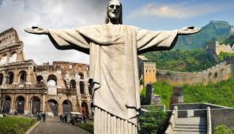

Christ the Redeemer
Christ the Redeemer (Portuguese: Cristo Redentor, standard Brazilian Portuguese: [ˈkɾistu ʁedẽˈtoʁ]) is an Art Deco statue of Jesus in Rio de Janeiro, Brazil, created.

Taj Mahal
The Taj Mahal (/ˌtɑːdʒ məˈhɑːl, ˌtɑːʒ -/ TAHJ mə-HAHL, TAHZH -, Hindi: [taːdʒ ˈmɛɦ(ɛ)l]; lit. 'Crown of the Palace') is an ivory-white marble mausoleum on the right bank of the river Yamuna in Agra, Uttar Pradesh, India.

Colosseum
The Colosseum (/ˌkɒləˈsiːəm/ KOL-ə-SEE-əm; Italian: Colosseo [kolosˈsɛːo]) is an elliptical amphitheatre in the centre of the city of Rome, Italy, just east of the Roman Forum.